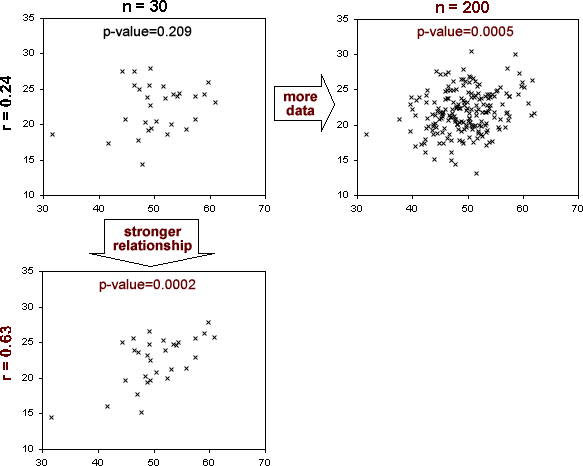

Use this diagram to explain the difference between the strength of a relationship (as described by the correlation coefficient, r) and the strength of the evidence for β1 not being zero (as described by the p-value).
It is important not to confuse these two values.
The p-value decreases...